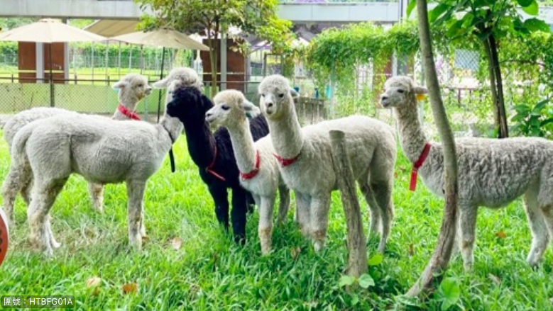
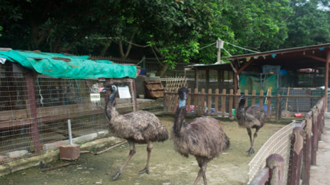

蝶豆花園有機農莊佔地 50萬平方呎，農莊內全新六隻可愛小羊駝已抵達和大家見面，你亦可以在全港首個天空之鏡和羊駝公仔合照打卡，另還有蝶豆花長廊花長廊、天鵝湖、願望島、花海、彩虹蜜蜂箱、 有機農田、遊樂場、動物園、太陽能、森林教育等。
了解更多 大棠有機生態園自一九九四年由一片荒蕪遍野之山谷創立至今逾二十載。經歷多年悉心栽種和建設，轉變為一個多元化、富教育、康樂及農耕文化的「休閒農莊」。另外園內增設的有機草莓園、有機蔬菜基地、有機菇菌培植室亦是本園的重點發展路向，漸漸成為一個回歸大自然的最佳綠色天堂。在這裡，您可以欣賞湖光山色，盡情吸收空氣中負離子氧氣濃度極高之「天然氧吧」，令您精神為之一振。這一片綠色樂土，既可讓腦袋放鬆一下，亦可親子同樂，必定能令你豁然開朗，樂而忘返。 (園內設施包括：荷花池、湖心亭餵魚、牛牛車遊山莊、大型繩網陣、兒童遊樂場、DIY工作坊、撈金魚、騎馬樂。)
了解更多 沿途有資深生態導師講解香港生態概況，進一步認識香港。
乘搭包船，吹著海風暢快欣賞海岸風光。
出海船遊，一探天氣報告中經常聽到的宋崗橫欄島嶼，走訪戰前燈塔。
登岸遊覽香港最南端的島嶼 - 蒲台島。
品嚐米芝蓮一星推介【添好運】10款精美點心
到訪香港首條文物徑【屏山文物徑】，欣賞法定古蹟
到【青馬大橋觀景台】飽覽青馬大橋、汲水門大橋、汀九橋美景
到訪【元朗公園百鳥塔】、【鄧氏宗祠】